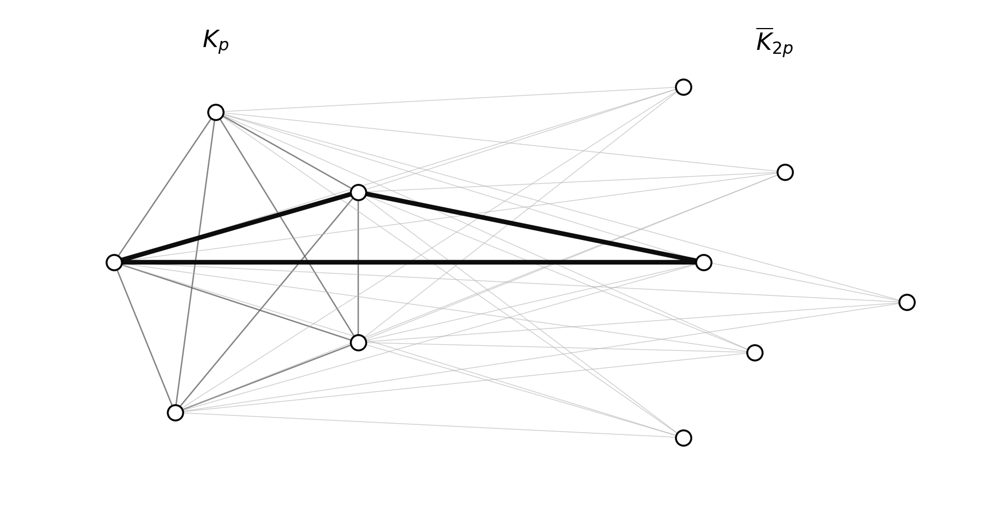
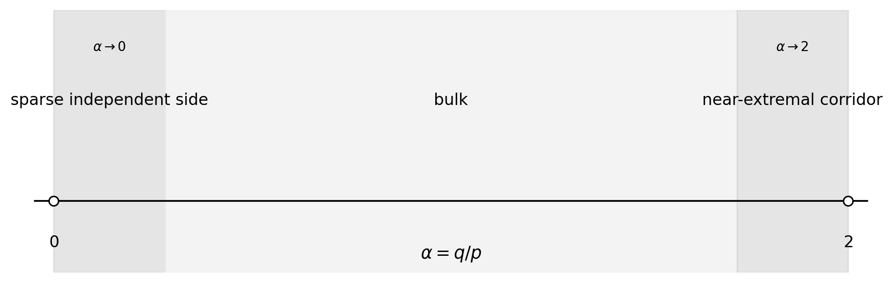
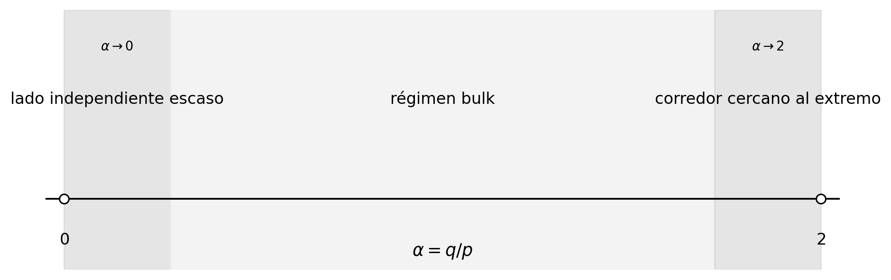

What the paper establishesQué establece el artículo
Erdős Problem #81 asks whether every chordal graph has a clique partition with at most n²/6 + O(n) parts. Paper III proves this bound for the subclass of split graphs, improving the previous split-graph coefficient 3/16 to the sharp coefficient 1/6. The full chordal problem remains open.El Problema #81 de Erdős pregunta si todo grafo cordal admite una partición en cliques con a lo sumo n²/6 + O(n) partes. Paper III demuestra esta cota para la subclase de grafos split, mejorando el coeficiente anterior 3/16 hasta el coeficiente afilado 1/6. El problema cordal completo sigue abierto.
Why the constant is sharpPor qué la constante es afilada
A complete-split graph with a clique of size p and an independent set of size 2p has exact clique-partition value n²/6 + n/6. It forces the quadratic coefficient 1/6 and shows that some linear term is necessary. The paper does not claim the least possible uniform linear coefficient.Un grafo complete-split con una clique de tamaño p y un conjunto independiente de tamaño 2p tiene valor exacto de partición en cliques n²/6 + n/6. Esto fuerza el coeficiente cuadrático 1/6 y muestra que es necesario algún término lineal. El artículo no afirma cuál es el menor coeficiente lineal uniforme posible.


Kₚ ∨ K̄₂ₚ. The drawing is schematic.El extremizador complete-split Kₚ ∨ K̄₂ₚ. El dibujo es esquemático.The main theoremEl teorema principal
Here ν₃(G) is the maximum number of pairwise edge-disjoint triangles, and cp(G) is the minimum number of cliques whose edge sets partition E(G). The constant C is absolute.Aquí ν₃(G) es el número máximo de triángulos dos a dos arista-disjuntos, y cp(G) es el número mínimo de cliques cuyos conjuntos de aristas particionan E(G). La constante C es absoluta.
How the proof is organizedCómo se organiza la demostración
The proof separates three regimes of α = |I|/|K|. In the bulk, a four-orbit linear program provides quadratic fractional slack, which absorbs the subquadratic packing loss. Near α = 0, dense residual clique graphs are decomposed into triangles. Near α = 2, averaged factorizations, polarization and a shifted-center completion close the short and mesoscopic corridors.La demostración separa tres regímenes de α = |I|/|K|. En el centro, un programa lineal de cuatro órbitas entrega holgura fraccional cuadrática, que absorbe la pérdida subcuadrática del packing. Cerca de α = 0, los grafos residuales densos de la clique se descomponen en triángulos. Cerca de α = 2, factorizaciones promediadas, polarización y una completación con centro desplazado cierran los corredores corto y mesoscópico.


| RegimeRégimen | α | Main mechanismMecanismo principal |
|---|---|---|
| Sparse independent sideLado independiente escaso | α→0 | dense triangle decompositiondescomposición densa en triángulos |
| BulkCentro | away from endpointslejos de los extremos | four-orbit LP plus fractional-to-integral transferLP de cuatro órbitas más transferencia fraccional-integral |
| Near extremalCasi extremal | α→2 | factorization and corridor inequalitiesfactorización y desigualdades del corredor |
Formal and audit evidenceEvidencia formal y de auditoría
The canonical Lean 4 / Mathlib v4.28.0 development is sorry-free and has no project mathematical axiom in the public theorem path. The designated theorem surfaces have foundational footprint [propext, Classical.choice, Quot.sound]. An external clean-room run compiled the public root in 8,455 jobs, the query roots in 8,444 jobs, and all eight axiom-query files.El desarrollo canónico en Lean 4 / Mathlib v4.28.0 no contiene sorry ni axiomas matemáticos del proyecto en la ruta pública del teorema. Las superficies designadas tienen huella fundacional [propext, Classical.choice, Quot.sound]. Una ejecución externa en clean room compiló la raíz pública en 8.455 jobs, las raíces de consulta en 8.444 jobs y los ocho archivos de consulta de axiomas.
These audits are adversarial AI reviews, not human peer review. The novelty conclusion is bounded by the literature corpus actually examined.Estas auditorías son revisiones adversariales por IA, no revisión humana por pares. La conclusión de novedad está acotada por el corpus de literatura efectivamente examinado.